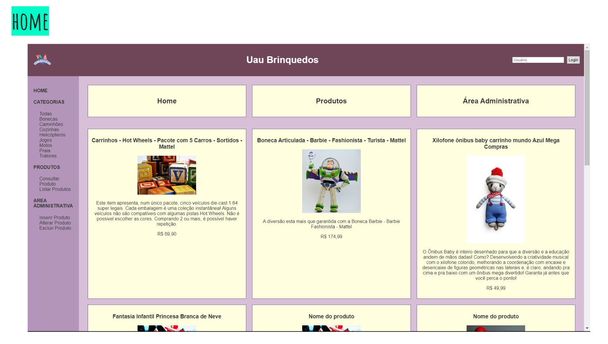
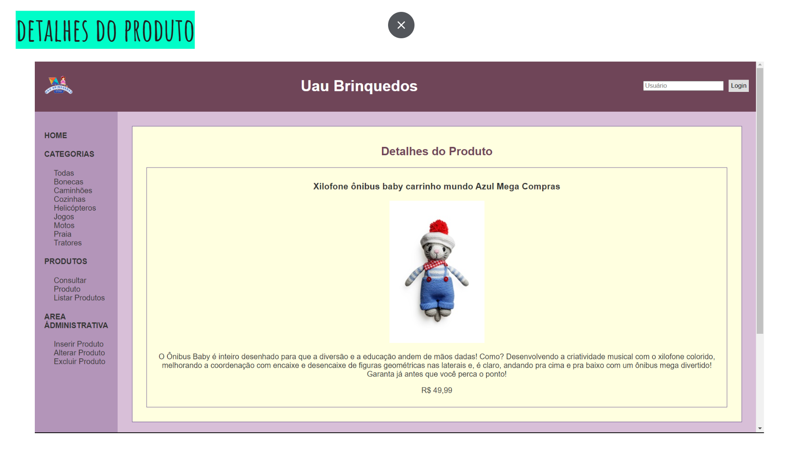
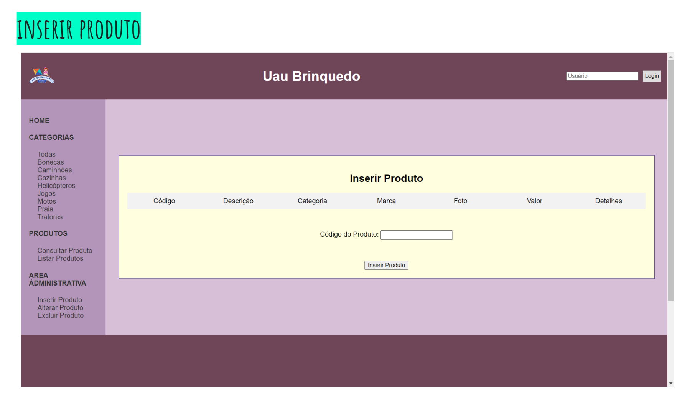
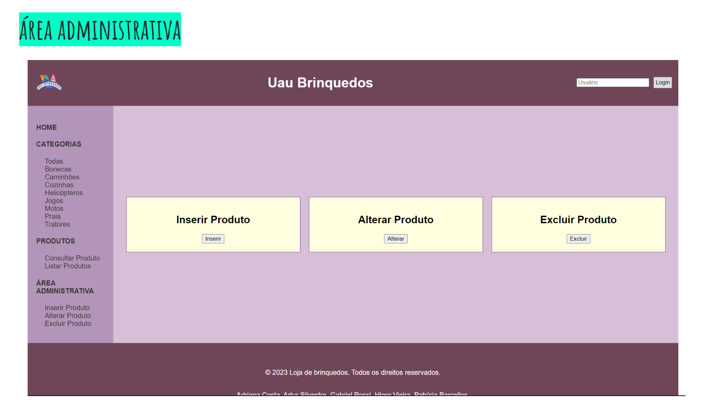

Catálogo de Brinquedos

Página Inicial

Consulta e Lista de Produtos

Área Administrativa

Cadastro de Produtos
Sobre o Projeto
Este projeto interdisciplinar, realizado no terceiro semestre de graduação em Desenvolvimento de Software Multiplataforma na FATEC Itaquera, integra conhecimentos de Desenvolvimento Web III, Banco de Dados Não Relacional e Interação Humano Computador. O objetivo foi construir um catálogo de brinquedos completo, com funcionalidades de administração de produtos, categorias e usuários.
Participação
- Front-end: Criação e estilização das páginas utilizando HTML5, CSS3 e Flexbox, com atenção à responsividade e acessibilidade.
- Banco de Dados: Definição e modelagem das coleções do MongoDB, estrutura de campos e integração com o back-end.
- Integração Front + Back-end: Implementação das rotas, formulários e operações CRUD via Java/Spring Boot, com uso de Thymeleaf para views dinâmicas.
Tecnologias Utilizadas
- HTML5, CSS3 e Flexbox
- JavaScript
- MongoDB
- Java / Spring Boot
- Thymeleaf
← Voltar para o Portfólio